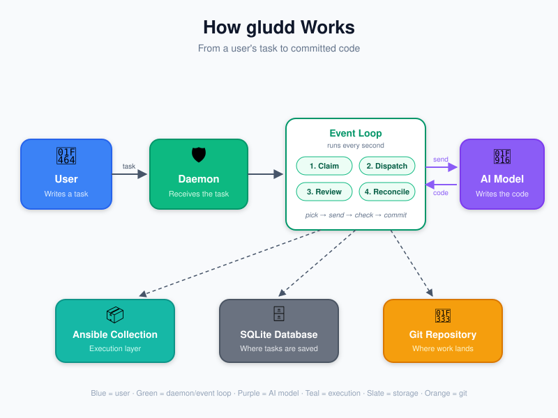
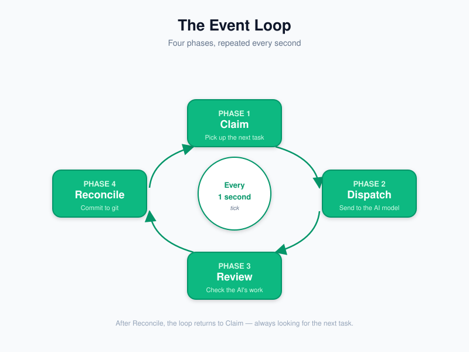

gludd
Autonomous Software Development
An AI agent that writes, tests, and ships code
— explained
v0.1.0-beta.2 · MIT License · built 2026-07-08T22:56:58Z
What is gludd?
gludd is an AI agent that writes code for you.
You describe what you want built. gludd writes the code, tests it, reviews it, and saves it to your project — automatically.
You hand them a task. They write it, test it, have a senior dev check it, and commit it. Then they grab the next task.
Not a chatbot. Not a code-completion tool. A full agent that does the whole job — start to finish.
The problem
Software development is slow and repetitive.
- Writing boilerplate code takes hours
- Writing tests for every change takes more hours
- Reviewing code takes yet more hours
- Fixing bugs found in review takes even more
- And then you do it all again tomorrow
What if a machine could do all of that — while you focus on the hard problems?
That's what gludd does. You describe the goal. gludd handles the grind.
How gludd works
The big picture, in plain English:
- You submit a task — "fix the login bug"
- gludd picks it up from a queue
- An AI writes the code to solve it
- Tests run automatically to check the work
- Another AI reviews the result
- The code lands in your project — ready to use

Source: docs/presentation/deck/assets/architecture.svg
The work cycle
gludd runs a continuous loop — four steps, over and over:
- Claim — gludd grabs the next task from the queue
- Dispatch — gludd assigns the task to an AI model
- Review — a different AI checks the work
- Save — gludd saves the finished code to your project

Source: docs/presentation/deck/assets/event-loop.svg
1You submit a task
Everything starts with a todo — a short description of what you want done.
Concrete example:
You type: "Write a unit test for the login endpoint"
gludd says: "Got it. Added to the queue."That's it. No prompt engineering. No code to write. Just describe the goal in plain English.
It's like writing a sticky note and putting it on the board. gludd picks up sticky notes one at a time and does the work.
2gludd picks it up
gludd runs continuously, checking the queue every second.
When it sees your task, it:
- Marks the task as "in progress" (so no one else grabs it)
- Reads the task description
- Figures out what kind of work it is (a bug fix? a new feature? a test?)
- Picks the right AI model for the job
Like a chef reading the next order on the ticket rail — they grab it, figure out what dish it is, and start cooking.
This is called the "claim" phase. gludd won't let two agents grab the same task.
3AI writes the code
gludd sends your task to an AI model — the model writes the actual code.
Which AI? gludd supports 24 model providers, including:
- OpenAI (GPT-4, GPT-4o)
- Anthropic (Claude)
- DeepSeek
- Z.AI (GLM)
- Google Gemini, Mistral, Cohere, and 17 more
gludd picks the best model for each task type — or you can choose.
24 providers VERIFIED · Source: src/general_ludd/models/provider_presets.py
Like having a team of specialists — one writes Python, another reviews security, another handles docs. gludd is the project manager who assigns the right person to each task.
4Tests run automatically
Once the AI writes code, gludd doesn't just trust it. It checks the work.
Every change goes through a quality gate:
- Lint — does the code follow style rules?
- Type check — are the types correct?
- Tests — do all the tests pass? (22,269 tests!)
- Security scan — any secrets or vulnerabilities?
If anything fails, the code doesn't land. gludd either fixes it or sends it back.
22,269 tests collected VERIFIED · Source: make test-count
Like a building inspector — the house doesn't get a certificate of occupancy until it passes every check.
5Another AI reviews the work
gludd doesn't let the same AI that wrote the code also approve it.
A different AI model looks at the finished code and asks:
- Does this actually solve the problem?
- Is the code clean and readable?
- Are there edge cases the writer missed?
- Did the tests actually test the right thing?
The reviewer can approve, request changes, or reject the work.
Like having a senior developer review a junior's pull request — a second pair of eyes catches mistakes the writer missed.
6The code lands in your project
Once the reviewer approves, gludd saves the work:
- The code is committed to your git repository
- A record of the whole process is saved (what was asked, what was written, what was reviewed)
- You can see exactly what changed and why
Everything is traceable. Nothing happens without a record.
This is called the "save" (reconcile) phase. The decision is logged with evidence — not just "it worked."
Like a contractor who not only finishes the job but hands you a folder with all the receipts, permits, and photos.
Security — built in, not bolted on
gludd has three layers of protection on every action:
- Layer 1 Permissions — hard rules on what gludd is allowed to do
- Layer 2 Runtime guards — 11 plugins that watch every action in real time
- Layer 3 Prompt rules — the AI is instructed to follow safe practices

Security findings: 14 of 15 fixed — one remains open and tracked.
11 enforcement plugins VERIFIED · 14/15 findings fixed · Source: .opencode/plugin/, docs/audit/
The scale of the system
gludd is a substantial piece of software. Here's what's under the hood:
find src -name '*.py'
make test-count
make collection-roles
collections/
make molecule-scenarios
provider_presets.py
.opencode/plugin/
make gen-status-table
What gludd can do today
Here's what the agent handles, right now:
- Write code — new features, bug fixes, refactors
- Write tests — unit tests, integration tests, end-to-end tests
- Review code — a separate AI checks every change
- Run quality gates — lint, typecheck, tests, security scans
- Commit to git — with full audit trails
- Manage sprints — backlog grooming, sprint planning, retrospectives
- Security audits — threat modeling, secret scanning, supply chain checks
- Build complete apps — built 12 games from scratch, autonomously
- Track costs — per-project, per-model cost accounting
- Self-improve — audits its own code and proposes improvements
136 features at 100% VERIFIED · Source: make gen-status-table
What gludd can't do yet
Honest gaps — we won't oversell.
- GAP No UI — gludd is command-line only, no graphical interface
- GAP Single-worker — one task at a time, no parallel execution across machines
- GAP SQLite only — no PostgreSQL, no horizontal scaling
- PARTIAL CI not fully green — local gate passes, GitHub Actions still has issues
- PARTIAL 1 security finding open — 14 of 15 fixed, one remains
- PARTIAL Phase F at 90% — some features still being completed
- PARTIAL No IDE integration — works in your terminal, not your editor
We'd rather tell you what's broken than pretend it's perfect. Every gap here is tracked and being worked on.
How to try it
Three steps to get started:
-
Get the code
git clone https://github.com/sandboxcom/gludd.git cd gludd make init -
Start the agent
uv run gludd daemon --port 8000 -
Submit your first task
uv run gludd todo add "Write a unit test for the login endpoint"
That's it. gludd picks up the task and gets to work.
Full guide: README.md · Prerequisites: Python 3.11+, uv, an API key for one model provider
What's next
Near term:
- Green CI on GitHub Actions (close the local-vs-CI gap)
- Fix the last security finding (14/15 → 15/15)
- Complete Phase F (90% → 100%)
- Live verification of all claimed features
Medium term:
- Visual dashboard (TUI) — see tasks, costs, and progress live
- Greenfield builds — "build me a todo app from scratch"
- Multi-worker support — parallel task execution
- PostgreSQL support — horizontal scaling
Long term:
- Fleet mode — multiple agents, shared work queue
- Sandboxed execution — safe running of untrusted code
- Production hardening — full release-ready stability
Honest metrics
Every number below is from a machine-produced measurement.
No hardcoded counts — live tool output only.
pyproject.toml
make test-count
find src -name '*.py'
docs/audit/
make gen-status-table
TASKS.md
TASKS.md
TASKS.md
These are truth, not aspiration. Every citation is a command you can run yourself.
Links & resources
- Source code
github.com/sandboxcom/gludd - This presentation
sandboxcom.github.io/gludd - Quick start guide
SeeREADME.mdin the repo - Architecture deep-dive
Seedocs/presentation/deck/assets/architecture.svg - Security audit
Seedocs/audit/in the repo - Full feature list
Runmake gen-status-tableafter cloning - License
MIT — free to use, modify, and distribute
Thank you
Questions?
gludd — Autonomous Software Development
v0.1.0-beta.2 · MIT License · built 2026-07-08T22:56:58Z
github.com/sandboxcom/gludd
sandboxcom.github.io/gludd
Every number in this deck comes from a command you can run yourself.
Nothing here was hand-authored or fabricated.